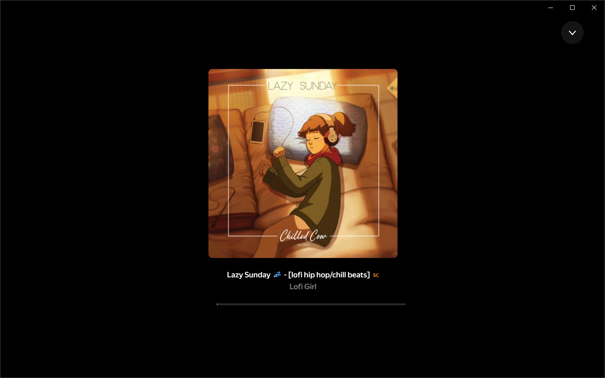
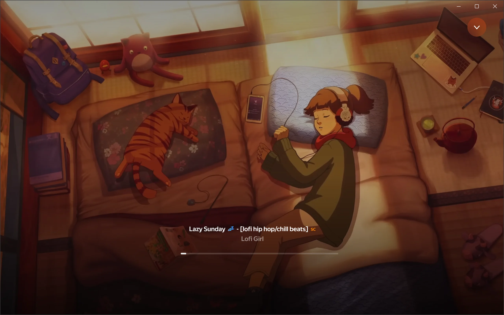

Клипы
Трек заиграл — на экране обложка
Полноэкранный плеер, как обычно. Мод уже знает, есть ли у трека клип: значок появляется рядом с названием заранее.
Клипы
Через пару секунд её сменяет клип
Родное видео Яндекса или клип с YouTube, в такт с треком и без чёрных полос. Клик по экрану — и снова обложка.


● Родное видео Яндекса● Клип с YouTube